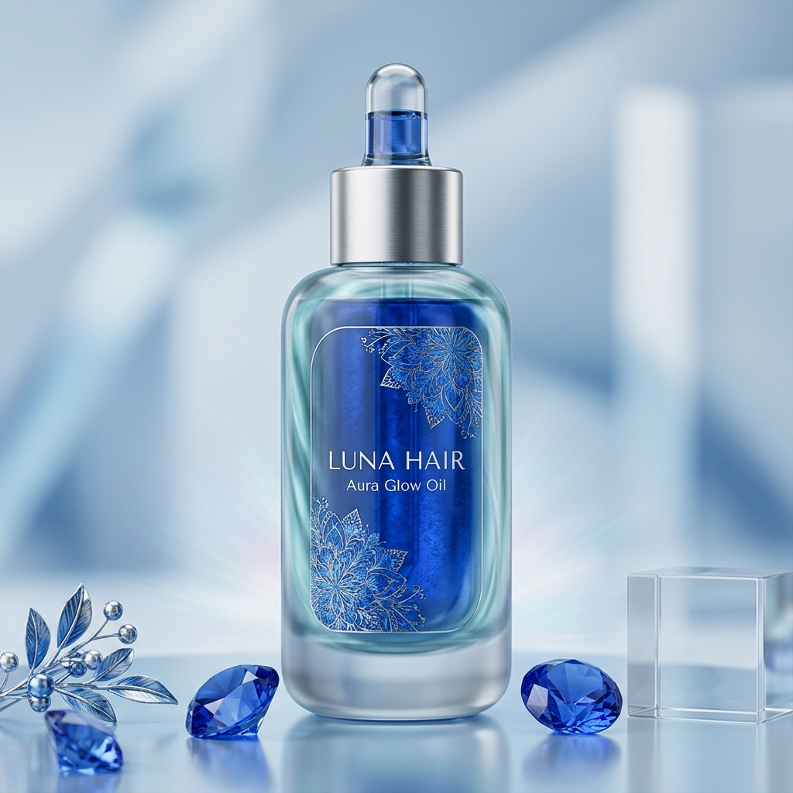
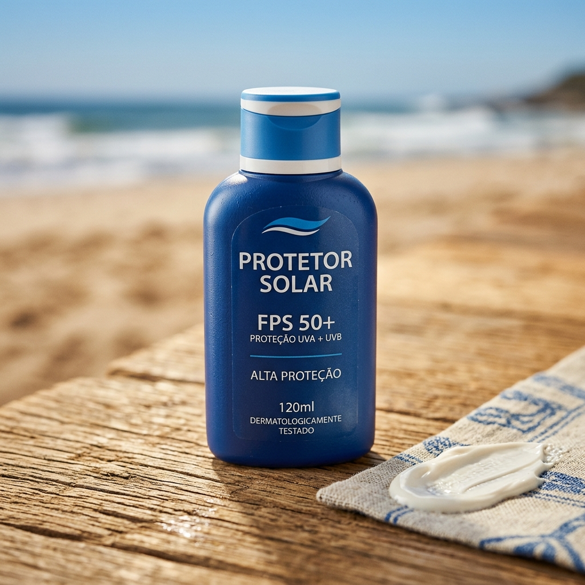
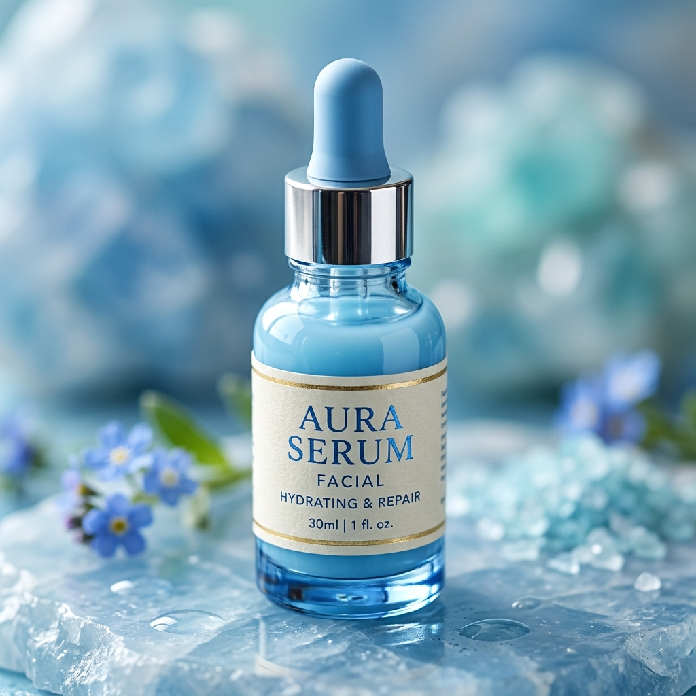

Meu primeiro post
Por: Ana Perinotto
Boas-vindas ao meu novo blog! Aqui vou compartilhar dicas de beleza e curiosidades dessa área.
Compartilho meus conhecimentos sobre cosméticos
Por: Ana Perinotto
Boas-vindas ao meu novo blog! Aqui vou compartilhar dicas de beleza e curiosidades dessa área.

Por: Ana Perinotto
Tratamento concentrado que devolve o brilho, a maciez e o alinhamento aos fios. Ajuda a controlar o frizz e proteger contra o ressecamento.

Por: Ana Perinotto
Proteção diária contra os raios UVA e UVB, ajudando a prevenir o envelhecimento precoce e as manchas solares. Possui toque seco e rápida absorção.

Por: Ana Perinotto
Fórmula leve e refrescante que ajuda a hidratar a pele, deixando-a macia, luminosa e revitalizada. Ideal para uso diário.